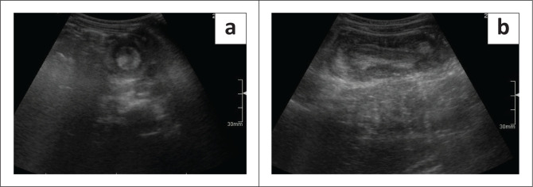
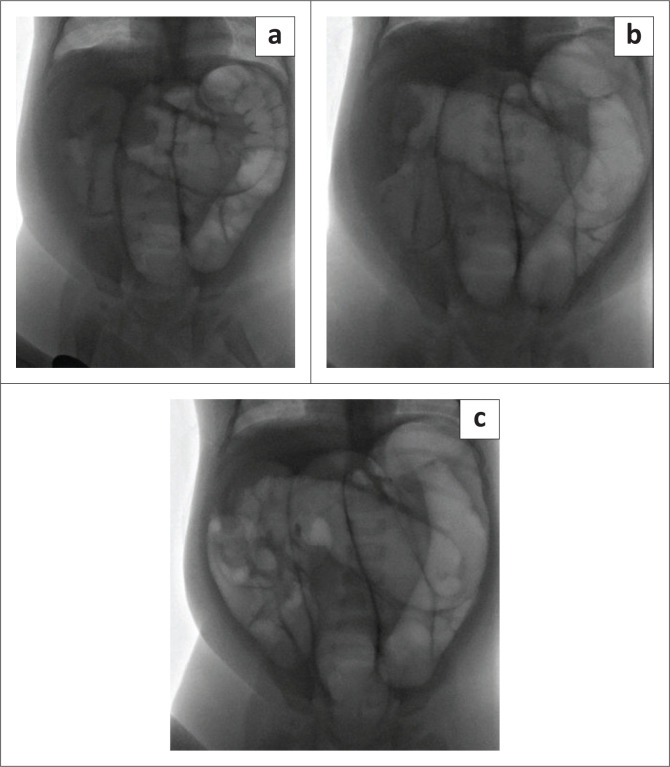
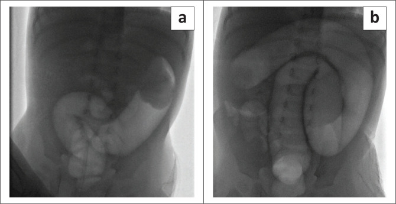
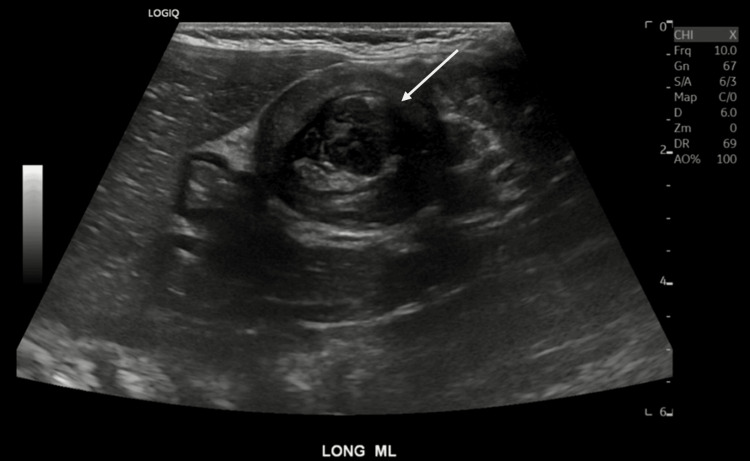

6178 — Lồng ruột ở trẻ: dấu bia trên siêu âm và quyết định thụt hơi hay mổ / Intussusception in children
Tags: pattern:long-ruot pattern:ruot-trong-ruot pattern:dau-bia pattern:than-gia pattern:tac-ruot vung:ruot-non vung:dai-trang vung:o-bung anatomy:hoi-manh-trang protocol:sieu-am-bung protocol:thut-hoi protocol:XR-bung score:FGAR
Mức chắc chắn (certainty): tổng hợp y văn (literature synthesis) — ghép 110 trẻ lồng ruột tại một bệnh viện Nam Phi 2016–2022 (PMC12506581), tổng quan hệ thống độ chính xác siêu âm (PMC12892616), tổng quan phạm vi lồng ruột tái phát 26.731 trẻ / 3.164 ca tái phát (PMC11957851), và 3 ca nguyên văn có ảnh (PMC12506581, PMC13110127). Không có thử nghiệm ngẫu nhiên so sánh áp lực thụt hơi; các ngưỡng 80–120 mmHg là thực hành đơn vị, chỗ suy luận được ghi rõ.
Câu chốt: lồng ruột là tắc ruột cấp cứu số 1 ở trẻ 6 tháng–2 tuổi, và câu hỏi của bác sĩ CĐHA chỉ có hai vế: (1) có lồng ruột không — siêu âm là chốt, gộp độ nhạy 96,3% / độ đặc hiệu 95,7% (PMC12892616), dấu bia trên mặt cắt ngang và thận giả trên mặt cắt dọc; (2) có thụt được không — thụt hơi thành công 60–90% ở nơi đến sớm, nhưng chỉ 42,5% ở đoàn hệ đến muộn (PMC12506581), và 3/73 (4,1%) thủng trong lúc thụt. Hai con số quyết định thái độ: đường kính ngoài > 30 mm và có dịch tự do làm thụt thất bại nhiều hơn; tái phát 7–15%, phần lớn trong 48 giờ.
Phân vai với bài khác: 3128 phủ lồng ruột non–non ở người lớn (70–90% có điểm dẫn, 3,2 cm/5,0 cm = mổ); bài này chỉ đi sâu lồng ruột ở trẻ: cơ chế hạch bạch huyết, dấu siêu âm, chỉ định và kỹ thuật thụt, theo dõi tái phát. Bài 161 phủ viêm ruột thừa — kẻ bắt chước số 1 khi lồng ruột nằm hố chậu phải.
1. Tổng quan bệnh học – cơ chế hình ảnh (TẠI SAO thấy dấu bia)
1.1 Cơ chế: hạch bạch huyết phì đại kéo đoạn ruột vào trong
- Sau một đợt nhiễm virus đường ruột/hô hấp (adenovirus, rotavirus, enterovirus), mảng Peyer ở hồi tràng cuối phì đại thành một khối mềm trong lòng ruột. Nhu động mạnh của hồi tràng đẩy khối này — cùng đoạn ruột chứa nó — lồng vào manh tràng: đoạn lồng vào (intussusceptum) bị đoạn nhận (intussuscipiens) bọc quanh. Đoàn hệ Nam Phi ghi 29,1% có tiền sử nhiễm virus trong 2 tuần trước (PMC12506581).
- Mạc treo bị kéo vào theo → mô mỡ và mạch máu mạc treo nằm lệch một bên trong khối lồng. Đây chính là cơ sở vật lý của mọi dấu hiệu siêu âm: các lớp ruột đồng tâm (mucosa – cơ – mucosa) tạo vòng tròn, còn mỡ mạc treo (tăng âm) nằm ở trung tâm lệch hoặc chen giữa hai lớp.
- Sinh lý bệnh theo giờ: ứ tĩnh mạch → phù thành ruột → chèn ép mao mạch → thiếu máu/hoại tử. Đoàn hệ trên: 60,8% (48/79) ca mổ có hoại tử ruột phải cắt đoạn. Vì vậy thời gian triệu chứng là biến số tiên lượng: trung vị 2 ngày ở nhóm thụt thành công vs 3 ngày ở nhóm mổ ngay (p = 0,0007).
1.2 TẠI SAO dấu bia / thận giả xuất hiện (vật lý siêu âm)
| Mặt cắt | Hình ảnh | Giải thích lớp | Tên dấu |
|---|---|---|---|
| Ngang (vuông góc trục ruột) | Vòng đồng tâm: viền giảm âm dày, lõi tăng âm | Thành ruột ngoài (giảm âm) bọc đoạn ruột trong; lõi tăng âm = mỡ mạc treo + niêm mạc bị kéo vào | Dấu bia / bánh vòng / bò mắt (target, doughnut, bull's eye) |
| Dọc (song song trục ruột) | Khối hình thận: vỏ giảm âm, tủy tăng âm | Ống ruột lồng vào nằm trong ống ruột nhận, mỡ mạc treo ở giữa giống xoang thận | Dấu thận giả (pseudokidney), sandwich, hayfork |
| Ngang, có mỡ lệch tâm | Vòng tăng âm hình lưỡi liềm trong vòng giảm âm | Mỡ mạc treo bị kéo một bên | Crescent-in-doughnut |
- Vì sao có giá trị: cấu trúc này không tồn tại ở ruột bình thường — ruột bình thường là ống có thành một lớp, không có "ruột trong ruột". Vì vậy khi thấy ruột trong ruột thì chẩn đoán gần như chắc, và độ chính xác gộp của siêu âm rất cao: Se 96,3% (CrI 94,9–97,5%), Sp 95,7% (CrI 93,3–97,5%), AUC 0,81–0,82 (PMC12892616, 2026).
- Vì sao KHÔNG dùng X-quang để chẩn đoán: dấu target và meniscus trên phim bụng chỉ là khối mô mềm + khí mỏng viền, độ nhạy thấp. Trong chính đoàn hệ trên, 0/49 phim bụng ghi nhận được dấu target/meniscus; X-quang chỉ có giá trị loại trừ thủng (khí tự do) và tắc ruột rõ.
1.3 Ngưỡng định lượng phải nhớ
| Mốc | Con số | Nguồn / ý nghĩa |
|---|---|---|
| Tần suất | 1–4 / 2.000 trẻ | PMC12506581 — cấp cứu bụng thường gặp nhất < 2 tuổi |
| Tuổi | Trung vị 7 tháng (IQR 2–48); đỉnh 4–9 tháng; giảm sau 18 tháng | PMC12506581 |
| Vị trí | Hồi–manh tràng chiếm phần lớn; đoàn hệ: 100% ileocolic | PMC12506581 |
| Đường kính ngoài trên siêu âm | Thụt thành công 26 mm vs thất bại 30 mm; > 30 mm = yếu tố thất bại (p = 0,0026) | PMC12506581 |
| Lồng ruột ruột non thoáng qua | < 2,5 cm, không có điểm dẫn, tự hết | PMC12506581 (dẫn một nghiên cứu thứ cấp về đường kính ngoài) |
| Dịch tự do | 42,5% ở nhóm thất bại vs 16,1% ở nhóm thành công (p = 0,0172) | PMC12506581 |
| Thụt hơi thành công | 60–90% (y văn) · 42,5% (đoàn hệ đến muộn) | PMC12506581 |
| Thủng khi thụt | 0–5% (y văn) · 4,1% (3/73) | PMC12506581 |
| Tái phát | 7–15% · gộp 11,8% (3.164/26.731) · đoàn hệ 6/31 (19%), 5/6 trong 48 giờ | PMC11957851, PMC12506581 |
| Điểm dẫn bệnh lý (PLP) | ~10% chung (0,3–20%); 3,95% ở ca tái phát | PMC11957851 |
2. Mẫu hình + chẩn đoán phân biệt theo vị trí (gamut)
2.1 Gamut theo vị trí khối lồng
- Hồi–manh tràng (ileocolic) — thể điển hình, khối ở hố chậu phải hoặc giữa bụng, dài 3–5 cm; đây là thể thụt được và cũng là thể gây tắc ruột non.
- Hồi–hồi / ruột non–ruột non (ileoileal) — thường nhỏ < 2,5 cm, thoáng qua, gặp ở celiac, viêm ruột do rotavirus, sau mổ; không thụt, theo dõi.
- Đại tràng–đại tràng (colocolic) — trẻ lớn hơn; điểm dẫn hay gặp (polyp, lymphoma, HSP); khối lớn, thụt dễ thất bại.
- Ruột thừa lồng vào manh tràng (appendiceal intussusception) — hiếm, dễ bị đọc là "viêm ruột thừa"; thấy cấu trúc ống lồng trong manh tràng, có thể kèm viêm ruột thừa.
- Sau mổ / ngược chiều (retrograde) — sau mổ tim bẩm sinh, sau nối Roux-en-Y; lồng hồi–hồi, thường không có "khối bụng" điển hình.
- Lồng ruột thoáng qua trong bệnh toàn thân — HSP (ban xuất huyết dạng thấp), Peutz–Jeghers, xơ nang; đau bụng + lồng ruột tái diễn là dấu hiệu bệnh nền.
2.2 Gamut theo cơ chế (để quyết định có mổ không)
- Vô căn (lymphoid hyperplasia): chiếm đa số trẻ < 2 tuổi, không có điểm dẫn, thụt là điều trị.
- Có điểm dẫn bệnh lý (PLP): Meckel, polyp (Peutz–Jeghers, juvenile), nang trùng lặp, lymphoma, u mỡ; ~10% chung nhưng cao hơn nhiều ở trẻ > 2 tuổi và ở ca tái phát. Đoàn hệ Nam Phi: 3 ca thất bại thụt có PLP (Meckel, Waugh syndrome).
- Bệnh nền viêm: HSP, Crohn, celiac — điều trị bệnh nền song song.
3. Bảng so sánh phân biệt (ma trận đối chiếu)
| Thực thể (entity) | Hình ảnh điển hình | Chốt vào (rule-in) | Chốt loại (rule-out) | Gợi ý xác nhận |
|---|---|---|---|---|
| Lồng ruột hồi–manh tràng vô căn | Dấu bia ngang + thận giả dọc, khối 3–5 cm, có mỡ mạc treo lệch tâm; Doppler còn tín hiệu | Ruột trong ruột + khối > 2,5 cm + đau từng cơn + tuổi 4–18 tháng | Ruột non < 2,5 cm, không có mỡ mạc treo kéo vào, tự hết khi chụp lại → lồng thoáng qua | Siêu âm đầu tay; thụt hơi điều trị |
| Lồng ruột có điểm dẫn (Meckel, polyp, lymphoma) | Khối không đều, có cấu trúc đặc/nang ở đầu khối; > 2 tuổi hoặc tái phát | Điểm dẫn thấy được trong khối + tái phát + tuổi > 2 | Khối đều, thuần "ruột trong ruột", trẻ < 1 tuổi → ít nghĩ PLP | Siêu âm kỹ đầu khối; mổ khi nghi |
| Lồng ruột ruột non thoáng qua | < 2,5 cm, vỏ mỏng, không dịch, không điểm dẫn; có thể nhiều ổ | Nhỏ, tự hết trong vài phút, bệnh cảnh celiac/viêm ruột | > 3 cm, có mỡ mạc treo dày, có dịch → không phải thể thoáng qua | Chụp lại sau 5–10 phút; không thụt |
| Viêm ruột thừa cấp | Ống ruột thừa > 6 mm, không đè xẹp, tăng âm mỡ quanh, có sỏi | Cấu trúc ống mù tận, không đè xẹp + sỏi + đau hố chậu phải | Thấy ruột trong ruột lồng qua manh tràng → lồng ruột, không phải viêm ruột thừa | Siêu âm đè; CT khi không rõ |
| Viêm hồi tràng / viêm ruột nhiễm trùng | Thành hồi tràng dày > 3 mm, tăng tưới máu, không có lớp đồng tâm | Dày thành lan tỏa + tiêu chảy + không có khối lồng | Có vòng đồng tâm và mỡ mạc treo kéo vào → lồng ruột | Siêu âm + cấy phân |
| Lồng ruột sau mổ (hồi–hồi) | Khối nhỏ, gần miệng nối, có thể ngược chiều | Tiền sử mổ bụng/mổ tim + khối nhỏ + tắc ruột sớm | Không tiền sử mổ, khối lớn hố chậu phải → thể vô căn | Siêu âm; CT nếu bụng chướng nhiều |
3.1 Ba dấu hiệu định vị giúp đọc đúng trên mặt cắt
- Khối lồng vs quai ruột dày: khối lồng có vòng đồng tâm hoàn chỉnh 360°; quai ruột viêm chỉ dày một phía, mất lớp niêm mạc.
- Vị trí trong ổ bụng: ileocolic đi từ hố chậu phải lên trên; nếu khối ở trái phải nghĩ đại tràng–đại tràng hoặc malrotation (Waugh syndrome — ca 3 dưới đây).
- Mỡ mạc treo: luôn nằm lệch một bên trong khối; nếu mỡ nằm giữa hoàn toàn thì đó là lồng ruột non–non nhỏ.
4. Protocol chụp + phân độ/điểm chuẩn hóa
4.1 Thứ tự thực hành (không chụp thừa)
- Siêu âm bụng là đầu tay, không cần chuẩn bị, không cần nhịn ăn: đầu dò linear 7–12 MHz ở trẻ nhỏ, convex ở trẻ lớn; quét toàn ổ bụng theo 4 góc + dọc theo đại tràng.
- Đo đường kính ngoài–ngoài trên mặt cắt ngang (mm) — đây là biến số dự báo thụt thất bại. Ghi có/không dịch tự do, Doppler màu (mất tín hiệu = nghi thiếu máu), và tìm điểm dẫn ở đầu khối.
- X-quang bụng chỉ khi nghi thủng (bụng cứng, sốc, khí tự do) hoặc tắc ruột rõ — không dùng để chẩn đoán lồng ruột.
- Thụt hơi dưới fluoroscopy (hoặc thụt nước dưới siêu âm nếu đơn vị làm được) khi không có chống chỉ định.
- CT chỉ khi: chẩn đoán không rõ, nghi biến chứng (thủng/hoại tử), hoặc nghi điểm dẫn ác tính ở trẻ lớn.
4.2 Kỹ thuật thụt hơi (theo đơn vị trong đoàn hệ)
- Chống chỉ định tuyệt đối: nhiễm khuẩn huyết/sốc, viêm phúc mạc, thủng ruột (khí tự do), mất ổn định huyết động.
- Áp lực: 80 → 100 → 120 mmHg, mỗi mức 3 lần, nghỉ 3 phút giữa các lần; tổng tối đa 9 lần.
- Lặp lại có trì hoãn: nếu chưa giảm hết, thụt lại sau 3–6 giờ (cho phù giảm) — đơn vị trong bài làm tối đa 2 đợt trì hoãn trước khi mổ.
- Theo dõi trong lúc thụt: khí vào hồi tràng = giảm thành công; ngừng ngay khi bụng căng đột ngột, khí vào ổ bụng, hoặc khối không di chuyển qua 3 lần.
- Dấu hiệu thất bại: khối dừng lại (không tiến thêm) dù áp lực tăng — ca 3 dưới đây dừng ở góc gan và mổ thấy ruột thiếu máu.
- Sau thụt: theo dõi 6–24 giờ, cho ăn lại khi hết đau; dặn tái phát trong 48 giờ (5/6 ca tái phát của đoàn hệ rơi vào cửa sổ này).
4.3 Sơ đồ quyết định (Mermaid)
flowchart TD
A["Trẻ đau bụng từng cơn + nôn + phân máu"] --> B["Siêu âm bụng: dấu bia / thận giả?"]
B -->|Không| C["Tìm nguyên nhân khác: viêm ruột thừa, viêm ruột, tắc ruột"]
B -->|Có| D{"Chống chỉ định thụt?<br/>sốc, viêm phúc mạc, thủng, mất ổn định"}
D -->|Có| E["Mổ: tháo lồng + cắt đoạn nếu hoại tử"]
D -->|Không| F["Thụt hơi 80 -> 100 -> 120 mmHg<br/>3 lần mỗi mức, nghỉ 3 phút"]
F --> G{"Khí vào hồi tràng,<br/>khối biến mất?"}
G -->|Có| H["Thành công: theo dõi 6-24 giờ<br/>dặn tái phát trong 48 giờ"]
G -->|Không| I["Thụt lại sau 3-6 giờ<br/>tối đa 2 đợt"]
I --> J{"Giảm được?"}
J -->|Có| H
J -->|Không| E
H --> K{"Tái phát?"}
K -->|1-2 lần| F
K -->|3 lần hoặc nghi điểm dẫn| E
4.4 Phân tầng theo dữ liệu đo được
| Nhóm | Đặc điểm | Thái độ |
|---|---|---|
| Thuận lợi | Tuổi 7 tháng, đau 2 ngày, đường kính 26 mm, không dịch, không mất nước | Thụt hơi, khả năng thành công cao |
| Khó | Tuổi < 6 tháng, mất nước, dịch tự do, đường kính 30 mm, đau 3 ngày | Chuẩn bị mổ song song; thụt vẫn thử nếu không chống chỉ định |
| Rất khó | Sốc, viêm phúc mạc, khí tự do, hoại tử trên siêu âm | Mổ ngay, không thụt |
5. Biến thể bình thường và cạm bẫy
- Lồng ruột ruột non thoáng qua — thấy khối < 2,5 cm ở trẻ celiac/viêm ruột, không có mỡ mạc treo dày, tự hết. Không thụt, không mổ; chụp lại sau 5–10 phút để chứng minh.
- "Siêu âm âm tính vì nhiều hơi" — không loại trừ. Quét theo trục đại tràng và đè từng vùng; hơi nhiều thì đổi tư thế, dùng đầu dò convex, hoặc chụp lại sau khi đặt sonde trực tràng (nếu chỉ định thụt).
- X-quang bình thường không loại trừ — trong đoàn hệ, 0/49 phim có dấu target/meniscus. X-quang chỉ để tìm khí tự do.
- Phân máu "thạch anh đào" là dấu MUỘN — đoàn hệ Nam Phi ghi 88,2%, nhưng đây là nơi đến muộn; ở trẻ đến sớm, dấu này vắng và không được dùng để loại trừ.
- Đau bụng + li bì/hôn mê — lồng ruột có thể biểu hiện thần kinh (li bì, co giật) do mất nước/độc tố; đừng chỉ nghĩ viêm màng não.
- Thụt "thành công" nhưng bỏ sót điểm dẫn — giảm hết trên fluoroscopy không có nghĩa hết bệnh; nếu tái phát sớm hoặc trẻ > 2 tuổi, phải tìm PLP và hội chẩn mổ.
- Bỏ sót lồng ruột thứ hai — 3,1% ca lồng ruột người lớn có hai ổ (bài 3128); ở trẻ cũng phải quét toàn bộ ruột, nhất là khi khối ở vị trí bất thường.
- Nhầm với viêm ruột thừa — lồng ruột hồi–manh tràng nằm đúng hố chậu phải, đau + sốt nhẹ; điểm khác biệt là ruột trong ruột, không phải ống mù tận.
Phản biện trung thực: tỷ lệ thụt thành công 42,5% và hoại tử 60,8% đến từ một bệnh viện tuyến cuối ở Nam Phi với bệnh nhân đến trung vị 2 ngày — không đại diện cho nơi phát hiện sớm (60–90%). Ngưỡng > 30 mm cũng chỉ từ một đoàn hệ hồi cứu (p = 0,0026) và chưa được xác nhận độc lập; không nên dùng một mình để từ chối thụt.
6. Tự lượng giá — Blind Quiz
Ca 1 — Bé trai 7 tháng, đau bụng từng cơn 12 giờ, nôn ra dịch xanh, phân lẫn máu nhầy. Nhìn siêu âm trước khi đọc đáp án. (Kịch bản dựng quanh ảnh minh họa của bài tổng quan; số đo trong "Gợi ý" là của kịch bản, không phải số liệu ca gốc.)

- Gợi ý: khối ở giữa bụng, đường kính ngoài 28 mm, không có dịch tự do, Doppler còn tín hiệu.
- Câu hỏi: hai dấu siêu âm trong (a) và (b) tên gì? Cấu trúc tăng âm ở giữa khối là gì? Bước tiếp theo?
Bấm để hiện đáp án (findings + chẩn đoán)
- Dấu hiệu: (a) dấu bia/bánh vòng — vòng đồng tâm giảm âm bao quanh lõi tăng âm; (b) dấu thận giả — khối hình thận, vỏ giảm âm, "xoang" tăng âm ở giữa.
- Cấu trúc tăng âm trung tâm = mỡ mạc treo + niêm mạc bị kéo vào theo đoạn ruột lồng — đây là lý do dấu hiệu này không thể có ở ruột bình thường.
- Chẩn đoán: lồng ruột hồi–manh tràng (ileocolic intussusception).
- Bước tiếp: đánh giá chống chỉ định thụt (không sốc, không viêm phúc mạc, không khí tự do) → thụt hơi; khối 28 mm và không dịch là nhóm thuận lợi.
- Nguồn ảnh: SA Journal of Radiology 2025 (PMC12506581), CC BY — Hình 3, hai khung a–b.
Ca 2 — Bé gái 9 tháng, lồng ruột hồi–manh tràng trên siêu âm. Xem ba khung fluoroscopy của một lần thụt hơi. (Tuổi là của kịch bản; kỹ thuật và mốc áp lực lấy đúng theo Hình 2 của bài gốc.)

- Gợi ý: khởi đầu 80 mmHg, sau đó 100 mmHg; không có khí ngoài lòng ruột.
- Câu hỏi: dấu trong (a) gọi là gì? (b) chứng tỏ điều gì? (c) có phải giảm thành công không, dựa vào dấu nào?
Bấm để hiện đáp án (findings + chẩn đoán)
- (a) Dấu meniscus — khí trong đại tràng viền quanh đầu khối mô mềm (đỉnh khối lồng), tạo hình lưỡi liềm.
- (b) Khối di chuyển từ đại tràng ngang tới góc gan → chứng tỏ khối còn trượt được, chưa dính/hoại tử; đây là dấu hiệu tiên lượng thụt thành công.
- (c) Giảm thành công: mất dấu meniscus, khí tràn vào hồi tràng (quai ruột non chứa khí), áp lực cuối 100 mmHg.
- Ý nghĩa: khí vào ruột non là tiêu chuẩn "giảm hoàn toàn" trên fluoroscopy; sau đó theo dõi 6–24 giờ và dặn tái phát trong 48 giờ.
- Nguồn ảnh: SA Journal of Radiology 2025 (PMC12506581), CC BY — Hình 2, ba khung a–c.
Ca 3 — Bé trai 11 tháng, lồng ruột hồi–manh tràng; thụt hơi 3 lần không giảm. Xem hai khung cuối. (Diễn biến khối và kết quả mổ lấy đúng theo Hình 4 của bài gốc.)

- Gợi ý: khối ban đầu ở góc lách, di chuyển tới góc gan rồi dừng; bụng chướng dần.
- Câu hỏi: vì sao phải mổ? Dấu nào trên fluoroscopy báo thất bại? Mổ thấy gì?
Bấm để hiện đáp án (findings + chẩn đoán)
- Dấu hiệu: khối dừng lại ở góc gan qua các lần thụt, không tiến thêm dù tăng áp lực → thất bại.
- Chẩn đoán: lồng ruột hồi–manh tràng không giảm được → chỉ định mổ.
- Mổ thấy ruột thiếu máu (đoàn hệ: 60,8% ca mổ có hoại tử) — đây là lý do không được thụt mãi khi khối đã đứng yên.
- Bài học: theo dõi chuyển động của khối, không chỉ theo áp lực; và không có giới hạn tuyệt đối số lần thụt nếu bệnh nhi ổn định — nhưng khối đứng yên + bụng chướng là điểm dừng.
- Nguồn ảnh: SA Journal of Radiology 2025 (PMC12506581), CC BY — Hình 4, hai khung a–b.
Ảnh bổ trợ — mặt cắt dọc kinh điển của lồng ruột hồi–manh tràng

- Mũi tên chỉ đoạn ruột lồng vào nằm trong lòng đoạn ruột nhận; mỡ mạc treo tăng âm ở giữa tạo "xoang thận".
- Nguồn: Cureus 2026 (PMC13110127), CC BY 4.0.
Bài liên quan chéo
- 600 – Tổng quan Nhi khoa
- 3128 – Lồng ruột non–non ở người lớn (khác hoàn toàn: 70–90% có điểm dẫn, 3,2 cm = mổ)
- 161 – Viêm ruột thừa cấp (kẻ bắt chước hố chậu phải)
- 622 – Tắc ruột sơ sinh (tắc ruột sớm sau sinh)
- 1667 – Tắc ruột non do dính thai phụ (tắc ruột cơ học)
- 6171 – Viêm tụy cấp do asparaginase (đau bụng cấp ở trẻ có bệnh nền)
Ảnh
- Ảnh tải từ Europe PMC / PMC (open access), giấy phép từng file trong
images/CREDITS.md. - Tên file:
6178_long-ruot_Modality_SourceID.jpg.
Không dùng để chẩn đoán độc lập khi chưa có người hướng dẫn.